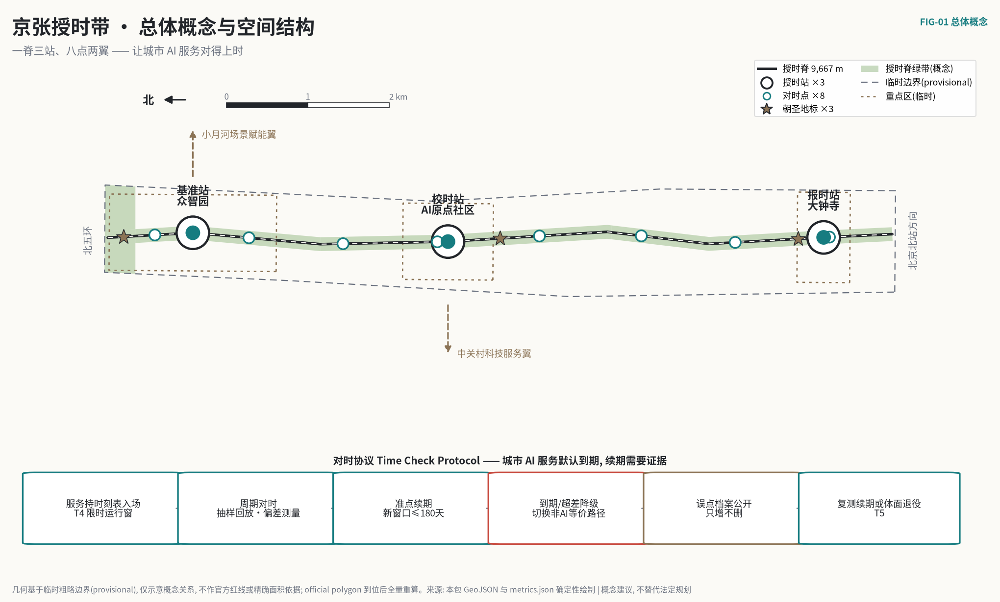
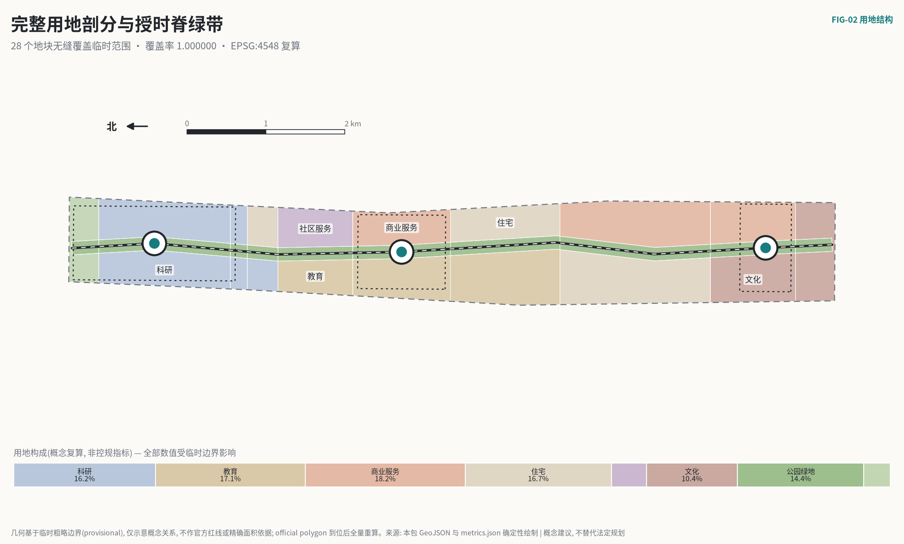
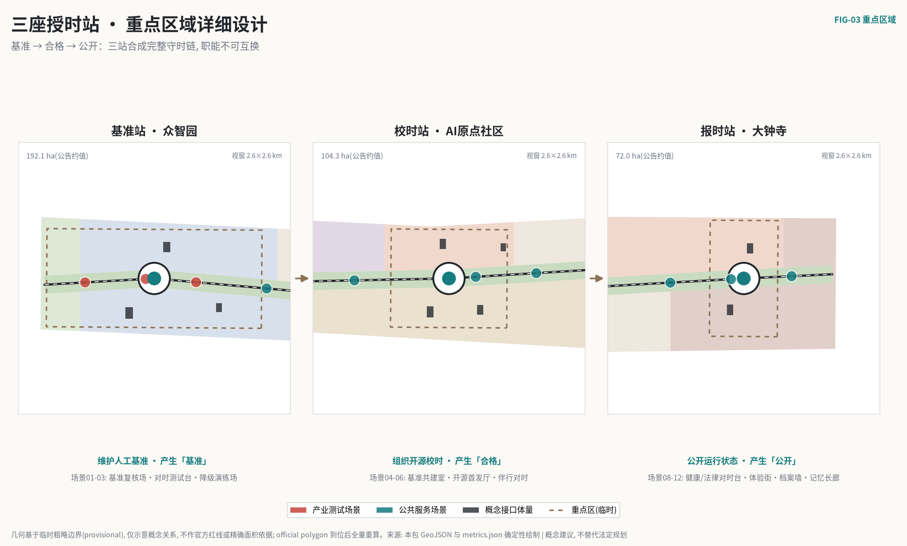
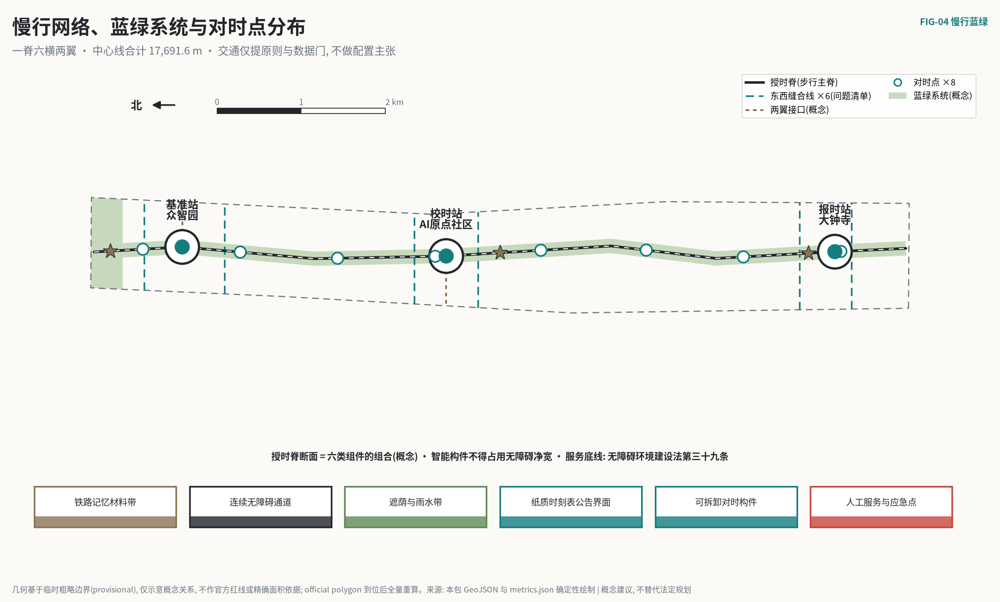
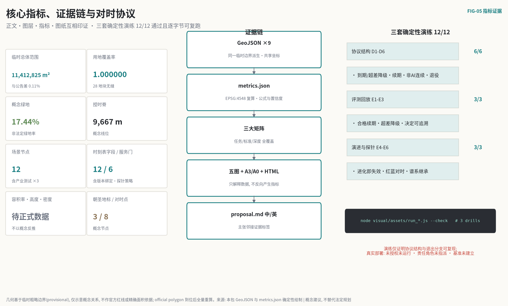

京张授时带：让城市 AI 服务对得上时
把京张铁路以时刻表运转的运营纪律转译为城市 AI 的对时协议：每个进入公共空间的 AI 服务持有一张有到期日的运行时刻表，定期与人工基准对时，到期未对时自动降级为人工服务，误点记录公开。一条授时脊、三座授时站、八个对时点承载这套机制；全部空间建议基于临时边界，属概念建议，不替代法定规划。
京张授时带：让城市 AI 服务对得上时
一条铁路能够安全运转一百年，靠的不是某一台永不出错的机车，而是一张所有人都看得懂、误点会被记录、过期就要让出线路的时刻表。
今天的城市正在把越来越多的判断交给 AI，而多数部署遵循的是相反的默认：上线一次，永久有效；出错悄悄修，偏差没人量；试点从不退场。本方案把默认反过来——城市 AI 服务默认到期。 每个进入公共空间的 AI 服务持有一张有到期日的运行时刻表，定期与人工维护的基准"对时"；到期未对时，自动降级为人工服务；对时超差，降级并公开复测条件；误点记录进入公开档案，只增不删。
服务公众的技术不需要被证明永远正确，需要被证明始终对得上时。

一页执行摘要
| 评审会问 | 本方案的回答 | 可核验的东西 |
|---|---|---|
| 核心命题是什么 | 城市 AI 的信任来自"对得上时"：服务窗口默认到期，续期只能通过与人工基准的定期对时；"试点永久化"在结构上不可能 | 运行时刻表 schema（12 必填字段，含版本绑定与探针策略）与 T0–T5 六道服务门 空间数据 |
| 机制能否被第三方检验 | 能。node visual/assets/run_timecheck_tabletop.js --check 对四份示例时刻表确定性复演 6 项检查：到期降级、超差降级、准点续期、非 AI 路径连续、退役五步 | 三套确定性演练共 12 项检查全部通过（协议结构 6/6·评测回放 3/3·演进与探针 3/3），证据 JSON 均含输入哈希，逐字节可复跑 指标 |
| 空间上做了什么 | 一条约 9.7 km 授时脊纵贯总体设计范围，三座授时站对应三处重点区（基准站·众智园 / 校时站·AI原点社区 / 报时站·大钟寺），八个对时点挂靠沿线社区服务设施 | 九类 GeoJSON、用地全覆盖无缝剖分（覆盖率 1.000000）指标 |
| 三条服务底线凭什么可执行 | 不凭设计者善意，凭现行法规与政策：无障碍环境建设法第三十九条要求保留人工办理等传统服务方式；生成式 AI 暂行办法第十四、十五条要求处置整改与投诉反馈机制；国办发〔2020〕45号确立传统服务与智能化服务并行 | sources.json 三条法规级来源，含本地快照与条文定位 来源 |
| 公共价值落在谁身上 | 不使用智能设备的居民获得与 AI 用户同等的基本服务；任何居民可就影响自己的服务读数在最近的对时点发起复核 | 七类画像、十二张场景卡的最小数据与退出条件；八个对时点空间落位 指标 |
| 近期能做什么 | 一期仅 34.5 公顷：对时协议文本、校时站周边试点段与两类低风险服务的桌面-沙箱演练，不依赖任何未公开官方数据 | 八个行动包含前置证据与停止条件；三期几何完整覆盖临时范围 指标 |
| 刻意不给什么 | 容积率、建筑高度、密度、退线、道路红线、拆改留结论、工程线位、投资测算 | metrics.json 中相应指标状态为待正式数据补齐并记录前置条件 指标 |
| 方法的边界在哪 | 对时测的是服务与基准的一致性，测不出"服务是否值得存在"；需求侧证据需由试点前基线与公众参与另行建立，本方案如实写明这一半的缺口 | 风险章节与假设登记 深度 |
| 数据可信到什么程度 | 全部几何基于临时粗略边界（与公告文字面积差 0.11%），仓库 Issue #846 已记录临时边界与 OSM 已测绘公园存在可复算空间差异——这条对本方案不利的证据照登不讳；三组发布机构公开统计经原始页面复核后仅作背景校准，不进入空间指标；official polygon 到位后整体重算 | 边界状态与重算触发器、数据基线翻译表 来源 指标 |
English brief. Jing-Zhang Timekeeping Belt translates the railway's oldest operating discipline — the timetable — into civic AI governance. Every AI service operating in public space holds a machine-readable service timetable with an expiry date. Renewal requires a periodic "time check" against a human-maintained baseline; an overdue or out-of-tolerance service degrades automatically to its guaranteed non-AI path, and every delay enters a public, append-only ledger. One 9.7 km Timekeeping Spine, three Timekeeping Stations on the three key areas, and eight neighbourhood Time-Check Points carry the protocol. All spatial content is a conceptual proposal on a provisional boundary — not statutory planning, not government commitment.
对时日：这套机制在街上是什么样子
写成规则的机制要放到街上才知道成色。以下是画像 P4——一位 74 岁、不用智能手机的居民——在"对时日"经过成府路对时点的十分钟。
上午九点半，成府路对时点（挂靠社区服务站）。 服务站门口的公告板换了内容：本季度沿线 AI 服务的时刻表汇总——健康导航，上次对时准点，下次对时还有 11 天；无障碍伴行，上季度一次超差降级、复测合格后续期，误点记录编号可查。她不用任何设备就能读到这块板子，这正是设计的一部分。
她注意到健康导航的一条记录。 上季度它把一家已迁址机构的地址给了三位居民，抽样回放发现与公开目录不一致——按协议这算"对时超差"，服务当天降级为人工窗口加纸质目录，直到目录同步、重新对时合格。降级那两周，服务站的窗口没有少办一件事。 这就是"到期降级"与"关停"的区别：降级只是把 AI 退回它的替代路径，公共服务本身不断线。
她可以做什么。 板子右下角写着：任何居民可就影响自己的一次服务读数，在本对时点登记发起复核；复核结果与原读数一并公开。这条权利落在她步行五分钟的地方——把复核入口放在需要专程前往的专门机构，等于没有给。
这十分钟里没有任何智能设备参与，而这套机制的全部要素——公开时刻表、误点档案、降级不断线、就近复核权——都已经在场。
设计依据与资料清单
证据分级
本方案先判断资料能支持什么，再决定空间可以画什么。项目名称、三层范围文字四至、约面积、三处重点区与设计任务来自官方公告；智能体六项任务、三大定位、五大功能、三区两翼与成果要求来自已清权的智能体任务书。来源 来源
| 证据类别 | 本方案采用方式 | 可以支持 | 不能支持 |
|---|---|---|---|
| 官方任务依据 | 公告与本地标准快照 | 任务、范围文字、约面积、成果深度 | 精确 polygon、控规指标、工程条件 |
| 清权任务依据 | 智能体任务书 | 品牌、案例、场景、地标、文化、运营任务 | 法定规划、政府行动或投资承诺 |
| 临时空间依据 | 仓库 provisional 边界 | 概念生成、拓扑自检、相对关系、离线可视化 | official redline、权属、精确面积、审批依据 |
| 法规与政策基线 | 仓库登记的法规本地快照 | 非 AI 路径、人工复核、投诉反馈三条底线的合法性论证 | 具体项目的合规结论或行政审批判断 |
| 行政尺度公开统计 | 三组发布机构原始页面（背景） | 校准服务对象规模、兜底刚性与基准数据集选择 | 走廊客流、设施容量、空间落位或项目绩效 |
| 全球机构案例 | 六个机构公开官网（背景） | 机制对照与设计启发 | 本地绩效类比、空间控制或实施保证 |
| 智能体设计数据 | 本包 GeoJSON 与 metrics | 概念分区、网络关系、场景落位、分期 | 现状测绘、工程线位、已确定拆改留 |
三条法规级依据构成对时协议的现实地基，而非事后装饰：无障碍环境建设法第三十九条明确公共服务场所"应当保留现场指导、人工办理等传统服务方式"，这是每张时刻表必填"非 AI 等价路径"字段的法律原型；生成式 AI 暂行办法第十四条的处置整改义务与第十五条的投诉反馈机制，对应降级预案与误点档案的公开申诉入口；国办发〔2020〕45号"传统服务方式与智能化服务创新并行"的原则作为背景政策支撑。来源 来源 来源
data/source_registry.json 是资料分级主控表。方案未使用商业地图瓦片、未清权图像或个人数据，也未使用任何未经公开发布的资料；未把任何背景资料升级为正式边界或控制结论。来源
边界状态与不利证据
全部几何使用维护者依据公告文字整理的临时粗略边界：总体设计范围复算 11,412,825.386 m²，与公告文字约 11.4 km² 差 0.1125%；三处重点区 polygon 同为临时替代。指标 指标 空间数据
需要如实登记一条对本方案不利的证据：仓库 Issue #846 及已合并的交叉核验工作记录了 OSM 已测绘的京张铁路遗址公园与临时总体范围相交为零、存在数百米量级的位置差异。这说明本方案沿临时边界中线布设的授时脊，其概念线位与真实遗址公园的空间关系存在待裁决的不确定性。本轮不擅自移动几何，只把 official polygon 到位设为全包重算触发器：先替换边界，再重建用地剖分，继而重排三站八点，最后重算指标、重绘图纸。来源 [assumption:A-BOUNDARY-001]
生成与复核方法
几何以 EPSG:4326 交换、EPSG:4548 复算面积与长度。用地由同一边界与同一组切线剖分，覆盖率 1.000000、无重叠；绿地、公共空间、建筑、道路、分期全部派生自同一基准，图纸与页面只解释结构化数据，不反向产生指标。指标 深度 [self_check:METRIC_RECALCULATION]
三个候选情境的比选
方案不是从单一灵感出发。设计前在三个候选情境间按七项标准比较：整体效应、公共利益、AI 原生性、空间可转化性、长期运营、证据可复核性、对资料缺口的稳健性。比选是推断性框架，用于交代"为什么是这一个"；判定权在评审与专业团队，比选不替代现场调研与法定规划。
| 候选情境 | 主要长处 | 代价与短板 |
|---|---|---|
| A 智能展示带：沿脊布设备与体验节点 | 传播直观、见效快 | 公共回路弱；设备折旧快；资料缺口下只能伪精确落点 |
| B 基准园区带：三园各建测试设施 | 产业逻辑清楚、与三处重点区对应 | 公众只是旁观者；治理停在园区围墙内；园区之间没有制度性连接 |
| C 公共对时制度：时刻表、对时点与误点档案 | 验证、使用、监督闭合成环；资料缺口下按制度而非伪精确落位；退出与问责内生 | 依赖持续人工投入；见效慢于展示型方案 |
C 为主方案。比选的输家不被丢弃，被降级使用：A 的展示语汇保留为导视与公告板的设计工具，B 的园区测试能力被吸收为基准站职能。C 的短板同样照登——对持续人工投入的依赖，正是校时员轮值条款要解决的问题。
三层范围工作框架
官方公告将工作分为统筹研究、总体设计与重点区域三层。本方案用同一"对时"逻辑贯穿三层，每层只回答与其资料深度匹配的问题。标准 深度
| 层级 | 官方约规模与任务 | 京张授时带的回答 | 成果与诚实边界 |
|---|---|---|---|
| 统筹研究范围 | 约 43.6 km²；产业生态、战略定位、未来城市形态 | 回答"由谁维护基准、按什么节奏运营"：六个全球机制对照、对时闭环生态图谱、品牌与年度运营体系 | 案例只取机制不搬数字；无 official polygon 不做面积统计 |
| 总体设计范围 | 约 11.4 km²；城市更新与控规深度城市设计 | 一条授时脊、完整用地剖分、八个对时点、十二个场景节点、八个行动包 | 临时边界复算；法定强度、红线、容量待正式数据补齐 |
| 重点区域范围 | 约 368.4 ha 三处精细化设计 | 三座职能不可互换的授时站：基准站维护人工基准，校时站组织开源校时，报时站公开运行状态 | 重点区 polygon 为临时替代；拆改留、权属、文保结论待专业核查 |
总体空间结构概括为"一脊三站、八点两翼"。一脊是沿京张遗址公园方向纵贯的授时脊，概念长度 9,667.4 m，承担步行、文化解释与对时公示；三站是三处重点区的差异化授时职能；八点是挂靠沿线社区服务设施的对时点，把复核权放进日常步行范围；西翼中关村科技服务翼提供标准、法务与专业服务转介，东翼小月河场景赋能翼承接场景反馈。脊、站、点、翼均为概念关系，不是新增行政边界或工程红线。空间数据 指标 深度
三大定位与五大功能在对时闭环中各有位置：百年京张文化带保存"时刻表—信号—误点"的运营文化记忆；都市 AI 生活体验带让居民在可读、可退出、可复核的服务中感知 AI；AI 融合创新带把基准维护、校时测试与采用反馈组织成产业环节。全栈自主创新落在基准站的测试与标准能力，世界级创新生态落在校时站的开源与转化组织，AI+ 场景赋能落在沿线十二个场景节点，智能化活力城市落在全带公共服务双通道，AI 治理话语权落在对时协议本身——一套可复现、可退出、可解释的治理接口就是最有力的国际叙事。来源
统筹研究范围产业与未来城市研究
品牌：从"智能展示"转向"公共守时"
中文主名称"京张授时带"取自"授时"——由权威基准向社会发布标准时间的古老公共职能；"对时"则是每个终端定期校准自身的动作。英文名 Jing-Zhang Timekeeping Belt，核心协议名 Time Check Protocol。命名层级为：Timekeeping Belt（全带）— Timekeeping Station（三站：Benchmark / Calibration / Time-Telling）— Time-Check Point（八点）— Service Timetable（每个服务的时刻表）。这套语法可无损延展到导视、活动、证书与数字档案。来源
标志由三个元素构成：一条水平基准线、一枚圆形表盘轮廓、表盘上一道刻意未闭合的缺口。缺口表示"永远存在下一次对时"——任何服务的合格状态都是暂时的。独立 SVG 主标随包提供，由基础矢量几何原创生成。空间数据
概念视觉规范以表盘直径 x 为基准：标志四周净空不小于 0.5x；横向中英组合最小建议宽度 32 mm，数字界面最小 24 px。色值：基准墨黑 #26221F；信号红 #B5443A 仅用于降级、误点与停止状态，严禁装饰性使用；准点青 #1F7A72 标记在期服务；砖木暖灰 #A8917B 用于文化与遗产界面；单色场合使用墨黑或反白。禁止拉伸、旋转、企业冠名或将概念标志误作政府机构标识；禁止补全缺口——那是对这个标志最彻底的误用。具体商标检索、字体授权与无障碍对比度须由品牌与法律专业团队深化。深度
六个全球案例：只取机制，不搬数字
案例分两族——守时机构与 AI 基准机构，本方案的核心判断正是这两族的合流。全部信息取自机构公开官网，登记为背景资料，不引用绩效数字，不作本地类比。来源
| 案例 | 可核对的机构属性 | 可转译机制 | 京张过滤条件 |
|---|---|---|---|
| BIPM 国际计量局 | 维护国际单位制与协调世界时的政府间机构 | 多个国家实验室的钟共同生成一个公共基准；没有任何单一钟被无条件信任 | 不搬计量体制；转译为"基准由多方维护、单一服务不自证" |
| NPL 英国国家物理实验室 | 维护英国国家时间尺度的国家计量机构 | 守时是持续服务而非一次校准；偏差被连续测量并公开 | 不搬机构设置；转译为"对时是周期义务而非一次认证" |
| NIST 美国国家标准与技术研究院 | 发布时间频率服务与 AI 风险管理框架的标准机构 | 同一机构同时守护"时间基准"与"AI 评测基准"，两种基准共用一套计量文化 | 不搬监管框架；转译为基准站"人工基准答案集"的维护方法 |
| MLCommons | 组织公开 AI 基准测试的行业联盟 | 基准测试规则公开、结果可复跑、版本有记录 | 不搬测试项目；转译为校时的"抽样回放+版本记录"流程 |
| AI Singapore | 国家级 AI 能力建设计划 | 研究、工程、人才与治理组织为一个连续体系 | 不搬计划结构；转译为年度运营的"问题—校时—采用"台账 |
| Vector Institute | 面向可信采用的 AI 研究机构 | 从研究到采用之间设置证据与信任环节 | 不搬机构模式；转译为"对时合格是采用前提"的接力关系 |
六案共同指向一个结论：公共信任的基础设施从来不是"最强的钟"，而是"公开的对时制度"。 京张授时带把这个制度写进城市空间。
AI 创新生态图谱：对时闭环
生态图谱不以机构名单开场，以一个可运营的闭环开场：公共问题入池 → 基准站建立人工基准 → 服务持时刻表入场 → 周期对时（抽样回放+偏差测量）→ 准点续期 / 超差降级 / 到期降级 → 误点档案公开 → 复测或退役 → 基准随城市问题更新。中关村科技服务翼在"入场"与"采用"环节提供法务、知识产权、标准与资本转介；小月河场景赋能翼在"问题入池"与"反馈"环节组织社区与场景输入。土地、空间、产业、资金、人才、算力、数据、场景八类要素均以"可供专业团队深化研究"的机制建议表述，不绑定供应商，不承诺财政资源。来源
区域协同不虚构签约与名单，只定义可交换的最小对象——基准与误点记录本身就是最好的协同接口：
| 协同对象 | 概念输入 | 可交换的最小输出 | 进入与退出条件 |
|---|---|---|---|
| 北纬社区 | 居民问题与非数字服务体验 | 去标识化问题卡、对时点使用反馈 | 社区授权；参与不推定为同意部署 |
| 未来科学城 | 端侧模型与设备测试方向 | 基准测试协议、失效分类、复测条件 | 测试责任与知识产权明确；结果不自动互认 |
| 怀柔科学城 | 测量方法与不确定性评定能力 | 校时方法说明、测量不确定性口径 | 专业责任确认；不以合作设想代替资源 |
| 经开区 | 工程化与规模化反馈 | 互操作对时记录、维护要求、召回条件 | 企业自愿；不承诺采购或落地 |
| 京津冀 | 跨城规则复用方向 | 去地点化的时刻表 schema 与误点档案格式 | 各地依法复核；不复制坐标或审批结论 |
协同成效不以签约数衡量，看三样：时刻表 schema 被复用的次数、误点档案的公开完整率、居民发起复核的回应率。当前均无运行基线，不填绩效值。

总体设计范围城市更新与控规深度城市设计
空间判断
总体设计不把 AI 功能铺满 11.4 km²，而是形成"连续公共授时脊 + 差异化授时站 + 可替换功能侧翼"。授时脊两侧约 170 m 宽的公园绿带优先承担步行、遮荫、文化解释与对时公示；两侧功能区自北向南按"科研验证—教育校时—文化报时"的梯度组织：北段科研用地承接基准维护与全栈验证，中段教育用地面向高校组织开源校时与近校协作，南段商业与文化用地面向城市组织智能原生体验与报时文化。空间数据 标准
用地采用自然资源部分类子集，仅表达概念容量与功能关系。复算比例：科研用地约 16.2%、商业服务约 18.2%、城镇住宅约 16.7%、教育约 17.1%、文化约 10.4%、公园绿地约 14.4%、防护绿地约 3.0%、社区服务设施约 4.0%。这些是设计提案的复算值，不是控规指标；取得正式控规后逐项比对重构。指标 指标
更新方法：先调查、后分类、再行动
没有清权的现状建筑与权属底数，本方案不对任何具体建筑作拆除、保留或新建判断。城市更新采用四道门：A 门核对权属、用途、年代、结构与消防；B 门识别历史文化、社区服务与公共价值；C 门比较保留、修缮、改造、局部替换的全生命周期影响；D 门经公众参与和法定程序形成结论。四门未过，任何地块不进入拆改留分类。空间数据 深度
buildings.geojson 中十个体量是概念接口原型——基准实验庭、开源校时首发厅、报时文化客厅等——基底合计 57,840 m²、占临时范围 0.51%，仅检验功能与授时脊的界面关系，不代表现状建筑、层数或建设量。指标 指标
控规深度的表达方式
达到控规城市设计深度不等于编造控规数值。本包完整表达用地、空间结构、建筑体量方法、慢行网络、公共空间、风貌原则、更新项目、分期、指标与风险，经 standard_matrix.json 与 design_depth_matrix.json 建立证据链；容积率、高度、密度、绿地率控制、退线、四线与道路红线全部标注待正式数据补齐，不以概念几何反推。标准 深度 [assumption:A-CONTROLS-001]
公共界面三条控制建议：面向授时脊的首层保持可见的服务责任界面（谁在运营、下次对时何时，现场可读）；信息设施不占据连续无障碍通道；一切对时展示构件可拆卸、可维修、可退场。高度与体量只给相邻关系与遗产界面退让原则，具体数值待官方控制与视线分析。标准

重点区域详细设计
三处重点区公告约面积分别为众智园 192.1 ha、AI 原点社区 104.3 ha、大钟寺 72.0 ha；本包 polygon 为临时替代，不得用于地块、权属或精确面积判断。三站职能刻意不可互换：基准站产生"基准"，校时站产生"合格"，报时站产生"公开"——三者合成完整的守时链。空间数据 指标 深度
基准站·众智园：人工基准维护区 / Benchmark Station
定位。 全栈自主创新的授时表达：不是"最强模型在此"，而是"人工基准在此维护"。每类进入公共空间的 AI 服务，其对时所用的基准答案集（无障碍路径的正确提示、健康导航的正确转介、文化讲述的史实边界）在这里由相应专业人员建立、版本化并接受质询。基准维护是持续的专业劳动，这正是"全栈自主"最不可替代的一环——谁维护基准，谁定义合格。
空间与建筑。 概念组织为"基准实验庭—标准沙盒工坊—端侧对时驿站"三组界面：实验庭承担基准答案集的建立与争议裁决，可预约旁听；沙盒工坊承担模型与设备的受控对时测试；对时驿站承担断网降级、能耗与接管路径的周期复核。清河方向保持生态缓冲，任何亲水或跨越构筑待河道与生态资料。空间数据
场景与运营。 场景 01"模型基准公开复核场"、02"端侧设备对时测试台"、03"机器人降级演练场"为三项产业测试验证场景：01 定期公开复核在役公共服务模型的基准一致性；02 按时刻表复核端侧设备的降级与接管；03 让低速机器人在受控场地演练"到期停运—人工接管—物理退场"的完整降级链。三者均为测试场景，不代表可直接部署。指标 空间数据
证据门。 进入深化前必须取得文保、河道、权属、能源与消防资料；基准答案集必须先有明确的专业维护角色与争议处理规则，否则相应服务类别不得进入对时流程——没有基准，就没有对时，就没有续期。[assumption:A-BASELINE-001]
校时站·AI原点社区：开源校时组织区 / Calibration Station
定位。 世界级创新生态的授时表达：把高校、开源社区与初创团队组织成"校时共同体"。开源模型在此首发并登记时刻表；高校课程参与基准答案集的共建与复核；初创团队的服务在此完成第一次对时。合格不是一次性认证，而是可撤回的周期状态——这套区别于"评奖—挂牌"的组织方式，本身就是近校创新生态的制度差异化。
空间与建筑。 "近校协作学舍—开源校时首发厅—人才对时公寓—社区对时服务楼"沿授时脊东西两侧组织日常时序：白天校时与门诊，傍晚课程与讲解，首层全部保持面向绿带的可进入界面。慢行强调连续与可替代，不擅自跨越校园权属；轨道接驳只提出步行转介与信息连续原则。空间数据
场景与运营。 场景 04"基准答案集共建室"组织专业人员、学生与居民代表参与基准维护并保留版本与异议记录；05"开源模型校时首发厅"要求每次首发同时公布时刻表与首个对时窗；06"无障碍伴行对时服务"按 30 天窗口对时，由代表性使用者参与回放。空间数据
对时轮值的人力来源。 十二个服务按周期对时，月均约需 50–100 人时的回放与记录工作（概念测算，实际以试点校准）——不足以支撑一支专职评测队，也不应该由服务提供方自查。轮值由经认证的校时员执行：认证依托驻区高校的实践课程完成（复跑本包演练、参与一轮基准评审、模拟一次对时），两人一组在对时点值守，专业维护角色随叫兜底，资深校时员参与红方探针维护。这条路径有真实承载主体：海淀 37 所驻区高校已有"高校—监管—服务"的集中协作先例，高校自己提出的实验室与特种设备安全、成果转化等需求，与校时站的服务接口天然衔接。三条保护栏写死：未成年人不参与轮值；校时员回避自己参与开发的服务；裁决权永远在专业维护角色——校时员做回放与记录，不做审判。认证与轮值的落地需高校与相关主管部门另行确认。来源 [assumption:A-OPERATIONS-001]
证据门。 校区边界、权属、建筑现状与站点关系必须先补齐；基准共建必须有材料最小化、署名可撤回与未成年人保护规则，缺任一项相应活动只做旁听不做共建。空间数据
报时站·大钟寺：运行状态公开区 / Time-Telling Station
定位。 大钟寺一带保存着城市公共报时的文化记忆——钟的公共职能正是"向所有人同时公开同一个时间"。本方案把这层文化意象转译为智能原生商业的治理界面：全带 AI 服务的运行状态、误点档案与降级记录在此向公众"报时"；智能原生消费场景在统一时刻表下轮换体验。历史叙述以公开史料为准，文保范围与保护要求待官方图层，一切展陈构件避让遗产本体。[assumption:A-HERITAGE-001]
空间与建筑。 "报时文化客厅—智能原生体验坊—误点档案公开墙"组织站城界面：文化客厅承担报时文化展陈与国际交流；体验坊承担可退出的智能终端体验（场景 10）；档案墙把全带误点档案做成可步行阅读的公共界面。四象限慢行缝合先做地面诊断，桥隧与地下连通只列为待论证选项，不作工程结论。空间数据
场景与运营。 场景 09"公共法律转介对时台"与 08"社区健康导航对时台"在此设城市级窗口，只做信息导航与人工转介——08 的基准答案集选定为经核验的公开机构目录，全区医疗卫生机构 1456 个、社区卫生服务中心（站）239 个的既有网络说明转介型导航不需要自建任何"AI 医疗"结论 来源；10"智能原生体验对时街"所有展位按 45 天窗口对时并可随时退出；11"误点档案公开墙"与 12"京张记忆报时长廊"承担公共解释职能。空间数据
证据门。 文保范围、道路、轨道、市政、商业权属与消防资料齐备后方可深化；涉及大钟寺古钟博物馆及其保护范围的任何表达先经文保专项审查。空间数据
AI 创新生态、人才画像与 AI+ 场景
七类用户画像
画像用于识别需求与权利边界，不由个人数据生成。指标
| 画像 | 核心任务 | 空间与服务 | 数据与公平边界 |
|---|---|---|---|
| P1 开源开发者与基准维护者 | 发布、校时、维护基准、获得可追溯署名 | 首发厅、基准共建室、版本档案 | 署名可撤回；失败记录不被包装成成功 |
| P2 初创与产品团队 | 低成本对时、找到首个合规场景 | 沙盒工坊、校时门诊、体验街轮换位 | 不承诺资金订单；降级不影响再次申请 |
| P3 一线服务运营者 | 值守、执行降级、回应复核 | 对时点柜台、降级预案卡、升级联系通道 | 决策日志可审计；自动化不隐去人工劳动 |
| P4 老年居民与不用智能设备者 | 获得不依赖 AI 的同等服务 | 非 AI 等价路径、纸质时刻表公告、人工窗口 | 默认无技术路径；拒绝 AI 不降低服务 |
| P5 视障与行动不便使用者 | 连续、可靠地使用公共空间 | 连续无障碍通道、伴行服务、人工求助兜底 | 端侧即时删除；代表性使用者参与对时回放 |
| P6 高校师生 | 参与基准共建与校时轮值认证 | 近校学舍、共建室、开放课程 | 校园数据需授权；未成年人不画像 |
| P7 国际访客与治理观察者 | 理解机制、复跑证据、对照制度 | 报时站双语界面、可复跑演练脚本 | 区分演示、测试与批准运营，不夸大成效 |
对时协议：时刻表十二字段与六道服务门
所有场景共用一张运行时刻表（12 必填字段）：服务标识、公共目的、服务范围（对象/空间节点/排除用途）、最小必要数据（含保留期与"不采集个人数据"约束）、人工责任角色、非 AI 等价路径、基准引用（含版本与建立状态）、对时窗（周期上限 180 天）、降级预案（触发/步骤/恢复方式）、误点档案（公开、只增不删）、版本绑定（进化即失效）、探针策略（红蓝对时）。schema 与四份示例随包提供，字段缺一不可。空间数据 指标
服务全生命周期经过六道门，每道门由证据推进，不得越级：指标
| 门 | 名称 | 进入条件 | 未过时 |
|---|---|---|---|
| T0 | 问题与场地 | 公共问题真实、场地与权属边界核查 | 不落位、不招募公众 |
| T1 | 数据与权限 | 最小数据、保留期、删除与日志规则确认 | 权限保持关闭 |
| T2 | 基准与人工路径 | 人工基准建立、责任角色指派、非 AI 路径验收 | 只提供纯人工服务 |
| T3 | 沙箱对时演练 | 桌面与隔离环境复演降级全分支 | 不进入公共空间 |
| T4 | 限时运行窗 | 时刻表签发，窗口不超过 180 天 | 不开放；窗口即到期日 |
| T5 | 续期 / 降级 / 退役 | 对时合格续期；超差或到期降级；退役走五步 | 不得静默恢复或自动续期 |
关键设计是 T4 的窗口即到期日：批准运行与设定退场是同一个动作。传统流程里"叫停一个服务"需要有人主动担责，摩擦极大；对时协议里"继续运行"才需要证据（一次合格的对时），停止是无人作为时的默认结果。试点永久化在结构上不可能。
十二张场景卡
十二个场景节点沿授时脊落位，其中 01–03 为产业测试验证场景。每张卡列出服务对象、最小数据与对时安排；完整时刻表字段见结构化文件。指标 空间数据
| 卡 | 场景（节点） | 服务对象 / 最小数据 | 对时窗与人工底线 |
|---|---|---|---|
| 01 | 模型基准公开复核场（产业测试·基准站） | 服务提供团队与观察者；测试样本与版本记录 | 每季公开复核；争议由基准维护角色裁决 |
| 02 | 端侧设备对时测试台（产业测试·基准站） | 设备团队；设备级聚合读数 | 60 天窗；断网断电回退不合格即封存 |
| 03 | 机器人降级演练场（产业测试·基准站） | 机器人团队；事件与接管记录 | 演练"到期停运—接管—退场"全链；安全员随时接管 |
| 04 | 基准答案集共建室（校时站） | 专业人员、学生、居民代表；共建记录与异议 | 版本化维护；署名与撤回规则先行 |
| 05 | 开源模型校时首发厅（校时站） | 开发者与公众；授权代码与说明 | 首发即登记时刻表与首个对时窗 |
| 06 | 无障碍伴行对时服务（校时站—授时脊） | 视障与行动不便者；端侧即时删除 | 30 天窗；代表性使用者参与回放；人工求助兜底 |
| 07 | 通学路径对时看板（沿线） | 学生家庭与学校；公开线路信息 | 只做静态信息与人工咨询，教师在环 |
| 08 | 社区健康导航对时台（沿线—报时站） | 居民与老年人；主动输入的需求类别 | 30 天窗对时公开目录一致性；不诊断不留病历 |
| 09 | 公共法律转介对时台（报时站） | 居民与初创团队；问题类别 | 法律专业人员复核；模型输出不作法律意见 |
| 10 | 智能原生体验对时街（报时站） | 消费者与企业；匿名反馈计数 | 45 天窗；清晰告知、随时退出、人工投诉台 |
| 11 | 误点档案公开墙（报时站） | 全体公众；档案本身 | 只增不删；纸质与数字双形态 |
| 12 | 京张记忆报时长廊（授时脊） | 居民、访客、记忆贡献者；授权史料与元数据 | 出处标注、争议下架、权利人撤回 |
四份示例时刻表（对应场景 02、06、08、10）与确定性演练脚本随包提供：node visual/assets/run_timecheck_tabletop.js --check 复演六项检查全部通过——字段完整性 4/4、到期降级 4/4、超差降级、准点续期、非 AI 路径连续 4/4、退役五步 5/5；证据 JSON 固定输入哈希，第三方逐字节可复跑。演练只证明协议结构与退出分支可复现，不证明真实人工能力、现场安全或服务绩效；真实部署状态为未授权未运行，责任角色未指派，基准未建立。空间数据
对时的评测学内核与参考运行时
协议结构之外，"对时"这个动作本身也被做成了可执行证据：node visual/assets/run_baseline_replay.js --check 用合成基准答案集（5 条健康导航目录条目）演练完整的评测回放循环——合格回放 5/5 一致判续期，超差回放 1/5 漂移判降级并登记复测条件，且每个决定都由逐条比对与限差机械推出、全部比对行落档可查（E1–E3 三项检查通过，输入哈希固定）。空间数据
这揭示了对时协议的一个工程事实：它的四个动作与现代 agent 评测框架的四类标准能力一一对应——基准答案集对应基准设计，对时回放对应评测运行，续期/降级对应评测门禁，误点档案对应轨迹留档。visual/assets/timecheck-runtime.json 定义了这套映射接口：任何具备四类能力的开源评测框架（如 Apache-2.0 许可的桌面/服务器端 agent 构建器 PenguinHarness 等，或其他任何支持 OpenAI 协议的评测工具链）都可实现对时运行时；选型三原则写死为开源可审计、模型与供应商中立（不得把任一具体产品设为必要条件）、离线可复核。城市不必发明新软件品类，只需把已经成熟的评测工程学接到公共治理上。[assumption:A-BASELINE-001]
会进化的服务如何守时
静态服务的风险是漂移，自演化服务的风险是逃逸：现代 AI 服务会更新模型、改写提示词、自我优化——版本一变，上次对时合格的那个东西已经不存在了，治理却还拿着旧凭证。对时协议用三条条款封死逃逸路径，每条都有铁路制度原型：
进化即失效（原型：新车型必须重新试运行才能上正线）。 时刻表的 version_binding 字段把对时资格绑定到服务版本哈希：任何一次自我进化——模型更新、提示词修改、依赖变更——都使当前资格立即作废（version_voided），服务退回沙箱重新对时，才能带着绑定新哈希的新窗口回归。作废（对上时的版本已不存在）与降级（同版本没对上时）是两种不同状态；公共空间里没有热更新，安全修复同样在沙箱内完成后经对时回归，可设专业角色签字的加急通道，但不能跳过对时本身。原则一句话：资格不继承，档案要继承——新版本不继承旧版本的合格资格，而误点档案按版本谱系连续记录，公众在档案墙上读到的是完整的家族史。这与开源 agent 工程中"每轮自演化前快照、出新版后重跑基准验证"的自我改进循环互为对偶：自演化让服务变好，进化即失效让变好这件事变得安全。空间数据
红蓝对时（原型：非正常行车演练——考题不能提前知道）。 必须诚实指出静态基准的弱点：基准条目有限且公开，服务对已知题过拟合（"背题"）就能永远准点续期，对时会退化成走过场。修复方式是把探针策略写进时刻表：人类基准维护角色核准若干探针类别（同义改写、时效陷阱、越界请求必须转人工、无障碍表述变体），红方校时 agent 在类别内生成新题实例突袭回放；人类保留基准维护权、类别核准权与争议裁决权——agent 出题，人类定什么算及格。红方打穿的失效登记复测条件；红方发现基准答不了的好题，送入基准共建室成为新基准候选——红队喂养基准生长。[assumption:A-BASELINE-001]
三条款均有确定性证据：node visual/assets/run_evolution_probes.js --check 复演版本作废与重考回归（E4）、背题服务 0/4 全军覆没而健壮服务 4/4 通过的探针回放与基准缺口移交（E5）、以及跨版本的档案连续与资格不继承（E6），三项检查全部通过、输入哈希固定。演练中的探针为确定性模板，不调用模型；真实红方 agent 须经类别核准与裁决角色指派后方可运行。空间数据
用地、建筑规模与拆改留方案
完整用地剖分
用地由临时边界经纬度条带与授时脊绿带双重剖分生成 28 个多边形，相邻地块共享边界坐标，总面积与临时范围闭合（覆盖率 1.000000），无未标注空白。结构化用地是可替换的测试模型，不是对现状或法定用途的判断。空间数据 指标 深度
复算面积：科研用地约 184.87 ha、商业服务约 208.24 ha、城镇住宅约 190.31 ha、教育约 194.74 ha、文化约 118.66 ha、公园绿地约 164.35 ha、防护绿地约 34.64 ha、社区服务设施约 45.47 ha。全部受临时边界影响；完整公式与来源见 metrics.json。指标 指标
建筑原型与规模边界
十个概念体量分五类：基准维护类（实验庭、沙盒工坊、对时驿站）、校时组织类（首发厅、学舍）、生活支撑类（人才公寓、社区服务楼）、报时公开类（文化客厅、体验坊）与档案类（到期档案馆）。体量只检验功能与授时脊的界面关系；层数、高度、结构、产权均不表达，法定建筑规模待正式数据补齐。空间数据 指标
拆改留决策门
具体建筑进入深化后依次判断历史与公共价值、结构与消防可行性、全生命周期成本、使用者安置与参与、控规与权属合规，然后才进入"保留修缮、功能改造、局部替换、依法更新"四类。当前包不在图上标注任何拆除对象——把缺资料伪装成果断设计，正是对时文化反对的那种"未对时的确定感"。标准 深度

交通、轨道、市政与公共服务设施
步行优先的一脊六横两翼
概念慢行网络由授时脊（9,667.4 m）、六条东西缝合线与两条翼线接口组成，中心线总长 17,691.6 m。数值只反映提交几何，不是道路工程里程。六条缝合线是问题清单而非工程方案：缺口在哪、平面路径能否优化、无障碍是否连续；任何跨越轨道或干路的设想，待红线、交通量与结构资料后由专业团队比较。空间数据 指标 深度
本方案刻意不提出交通配置主张：不估客流、不设泊位、不画接驳线位。交通试点进入对时流程前，须先补齐走廊基线（分时段计数、无障碍连续性审计、投诉基线）。数据也会误点：每份走廊基线数据集同样持有一张时刻表——采集日期、有效窗与到期降级；引用过期基线的任何结论自动降级为"待重新采集确认"，不得继续作为扩点或加密依据。交通域的 AI 创新不在配置更多设施，而在把数据时效纪律做成制度。轨道站点只提出"信息与步行连续优先"原则。[assumption:A-TRANSPORT-001]
市政与新型基础设施
对时点与场景节点的市政需求采用"小单元、可断开、可计量"原则：受控网络接口、独立计量、紧急断电与日志导出方向；公共空间优先保障电力、遮荫、饮水、座椅与无障碍，再配置 AI 构件。能源负荷、通信容量与管线均未测算，不构成工程设计。深度
公共服务双通道
一切公共服务保持双通道：基础服务不依赖 AI（人工窗口、纸质时刻表公告、无障碍设施、应急求助），增强服务由 AI 辅助且按时刻表对时。这不是设计偏好，是无障碍环境建设法第三十九条"保留现场指导、人工办理等传统服务方式"的直接执行；45号文的"两条腿走路"原则在此获得空间形式。人口结构给出了这条底线的分母：全国互联网普及率 80.1%、60 岁及以上人口占 23.0%——双通道不是为少数人保留的例外通道，是按约五分之一人口设防的主通道之一。来源 来源 来源
蓝绿空间、公共空间与城市风貌
授时脊与蓝绿系统
概念绿地 1,989,861.487 m²、比例 17.44%，由授时脊公园绿带与北端五环防护绿带构成；三座授时站广场合计 260,113.14 m²、比例 2.28%，广场与绿带存在复合，不简单相加。指标 指标 空间数据
授时脊断面是六类组件的组合：保留铁路记忆的材料带、连续无障碍通道、遮荫与雨水带、纸质时刻表公告界面、可拆卸对时展示构件、人工服务与应急点。智能构件不得占用无障碍净宽；夜间保持低亮度；构件更新不得造成反复土建。标准 深度
三个 AI 朝圣地标
1. 零公里授时标 / Kilometre Zero Time Mark（授时脊北端）：全带对时体系的原点标志，铭刻对时协议第一版全文与历次修订记录——朝圣的对象是制度，不是设备。 2. 正点率碑廊 / Punctuality Ledger Gallery（报时站）：以年度为单位镌刻全带服务的对时记录，误点与准点同等镌刻；一个允许"迟到"被永久记录的城市，才配谈论可信 AI。 3. 到期档案馆 / Archive of Expired Services（授时脊中段）：收藏到期未续、超差退役服务的完整档案——退场不是失败，是制度在工作。让"体面退场"成为值得纪念的城市贡献。
三者均为概念建议，优先以展陈、导视与数字档案试运行，永久形式待文保、权属与运营评估。荣誉展示坚持来源可核验、贡献可撤回，不按商业影响力排序。指标 空间数据
文化叙事与导视
三条文化线索在"守时"母题下交织：京张铁路代表中国人自主建立的现代运营纪律——詹天佑主持修建的这条铁路依靠时刻表、信号与测量在复杂地形上安全运转，这是比任何单体构筑更深的遗产；中关村代表开放求证的创新文化；AI 新文化在此获得本方案的定义——可对时、可降级、误点可查。大钟寺一带的古钟文化记忆为南段提供"报时"的公共意象。导视语法使用表盘、刻度、基准线与信号色；文化标识与全带 Logo 分开管理。历史事实与图像经来源核验后使用，不生成虚构历史。深度 [assumption:A-HERITAGE-001]
国际传播主句：A city that keeps its AI on time — benchmarked by people, degraded on expiry, honest about delays.
城市风貌保持克制与可维护：材料优先砖、钢、木与可修复构件；信号红仅用于状态标识；不用大面积屏幕制造"未来感"——这条带的未来感来自制度的可见运转，而非光效。
更新项目清单、实施政策与分期计划
八个行动包
| 编号 | 概念行动包 | 主要交付 | 前置证据与停止条件 |
|---|---|---|---|
| P01 | 对时协议与公示系统 | 时刻表 schema 定稿、纸质公告模板、误点档案格式 | 法律、伦理、无障碍评审未过不启用 |
| P02 | 授时脊轻量试验段 | 遮荫休息、无障碍修补、纸质时刻表公告板 | 文保、权属或无障碍审计未过则调整或停止 |
| P03 | 基准站三场景 | 基准复核场、对时测试台、降级演练场 | 基准维护角色与安全责任未确认不扩大 |
| P04 | 校时站共建与首发 | 基准共建室、开源首发厅、伴行服务对时 | 授权、署名与未成年人规则不清只做旁听 |
| P05 | 报时站公开界面 | 误点档案墙、体验对时街、双语报时界面 | 文保、消防、消费者权益未确认则暂停 |
| P06 | 八个对时点挂靠 | 对时柜台、复核登记、公告板 | 挂靠设施权属与人员容量未确认不挂牌 |
| P07 | 三个朝圣地标 | 零公里标、正点率碑廊、到期档案馆（先展陈后永久） | 来源、版权或争议机制不完备不永久展示 |
| P08 | 年度授时周期 | 年度对时报告、开发者校时季、国际对照交流 | 主体、预算、许可未确认则缩小或取消 |
行动包数量 8，写入指标但不代表立项。指标 深度
概念责任与服务目标
行动包采用概念 RACI：A 是未来经授权且对结果负责的单一牵头角色（当前不预设任何机构）；R 是执行所需专业与运营团队；C 是决策前必须参与的权利人、公众与监管角色；I 是通过公开档案获知进展的使用者。下列目标是试点校准起点，不是服务标准、采购条款或政府时限。[assumption:A-OPERATIONS-001]
| 行动包 | 概念 A / R / C-I | 公共价值闸门 | 候选响应目标 |
|---|---|---|---|
| P01+P08 协议与年度周期 | A：经授权运营牵头角色；R：法律、伦理、档案；C-I：公众代表与全体使用者 | 在役服务时刻表字段完整率 100%；误点档案公开率 100% | 协议修订经复核后 5 个工作日内公示 |
| P02+P06 试验段与对时点 | A：经授权公共空间管理角色；R：景观、无障碍、维护；C-I：沿线权利人与代表性使用者 | 开放前无障碍连续路径审计覆盖 100%；每点保留纸质公告 | 严重缺口立即隔离；一般问题 5 个工作日给处置路径 |
| P03 基准站场景 | A：经授权测试责任角色；R：评测、安全、能源；C-I：行业专家与受影响人群 | 高风险测试人工接管覆盖 100%；失效原因记录率 100% | 严重风险立即停测，24 小时内初步记录 |
| P04+P05 校时与报时界面 | A：经授权服务运营角色；R：开源社区、文保、消费者权益；C-I：贡献权利人、居民、访客 | 共建署名可撤回覆盖 100%；体验退出路径覆盖 100% | 权属争议 1 个工作日内先隐藏再复核 |
| P07 朝圣地标 | A：经授权文化责任角色；R：展陈、历史、版权；C-I：贡献人与公众 | 展示对象来源核验覆盖 100% | 争议内容先下架，复核后决定恢复 |
三段分期
分期几何完整覆盖临时范围：一期 344,721.6 m²（3.0%）为校时站周边试点段——先把协议、公告与两类低风险服务的演练跑通；二期 4,341,998.4 m²（38.0%）贯通授时脊与三站；三期 6,726,105.4 m²（58.9%）在运营评估与法定程序后推进全带适应更新。每期结束公开"继续、调整、停止"三种结论——分期计划自己也持有一张时刻表。指标 指标 深度
年度运营与长期品牌
年度授时周期四个节拍：春季发布年度对时报告（全带服务的准点率、降级与退役记录）；夏季开发者校时季（开源模型集中首发与校时，对应任务书的开发者社区运营）；秋季国际对照交流（与全球基准机构的机制互访，对应国际传播）；冬季基准更新评审（吸收全年城市问题更新基准答案集）。活动品牌延用"表盘缺口"视觉；全部安排为概念建议，许可、安全、预算与责任须另行确认。来源
开发者社区路径：问题入池—认领基准共建—沙箱校时—限时窗运行—误点复盘—续期或体面退场；每一步都在公开档案留痕，贡献凭档案追溯而非凭宣传。企业招引路径：对时合格记录是最好的招商材料——一个企业的服务在误点档案里保持长期准点，胜过任何路演。
持续参与与开放复核
本包按仓库"返回式参与"要求生成：提交前同步 main、复读任务书与校验规则、检查 Issues 与已合并方案；边界不利证据（Issue #846 的空间差异记录）如实登记于本文与假设文件。后续迭代由事件触发：official polygon、控规或文保资料到位则全量重算；仓库规则或 schema 变化则先同步再更新；评审与社区反馈进入 changelog 并在下一版回应。方案自身遵守对时纪律——本提案的每一版都有对时记录。来源

指标体系、面积复算与合规矩阵
核心复算指标
| 指标 | 本包值 | 解释边界 |
|---|---|---|
| 临时总体范围 | 11,412,825.386 m² | EPSG:4548 复算；与公告文字差 0.1125%；非官方精确面积 指标 |
| 用地覆盖率 | 1.000000 | 28 个地块无缝覆盖临时范围 指标 |
| 概念绿地 | 1,989,861.487 m² / 17.44% | 授时脊绿带+防护绿带；非法定绿地率 指标 |
| 授时站广场 | 260,113.14 m² / 2.28% | 与绿带复合，不简单相加 指标 |
| 概念建筑基底 | 57,840 m² / 0.51% | 十个接口体量；非现状或审定规模 指标 |
| 授时脊 / 慢行网络 | 9,667.4 m / 17,691.6 m | 概念线位，非工程里程 指标 |
| 三站 / 八点 / 十二场景 / 三地标 | 3 / 8 / 12 / 3 | 全部为设计提案节点 指标 |
| 时刻表字段 / 服务门 | 12 / 6 | 协议接口，可被第三方复用 指标 |
| 三套确定性演练 | 12/12 通过 | 协议结构·评测回放·演进与探针；含输入哈希，逐字节可复跑；真实运营未授权未运行 |
| 容积率 / 高度 / 密度 / 法定绿地率 | 待正式数据补齐 | 不以概念几何反推 指标 |
数据基线与决策翻译
三组公开统计于 2026-08-10 自发布机构原始页面逐条抓取复核；sources.json 记录原文表述、发布与访问日期、许可状态与限制。页面未标明开放数据许可，因此本包仅摘录并归属事实数值，不复制原文、不再分发附件。全部数值登记为背景观察且 not_spatially_allocable=true：不进入 metrics.json，不改变任何几何、面积、线位或分期——统计校准的是判断的优先级，不是空间的形状。每条观察同时写明它改变了哪个对时决策、以及它不能证明什么。来源 来源 来源
| 来源尺度 | 可核验发现 | 校准的对时决策 | 不能证明什么 |
|---|---|---|---|
| 海淀区，2025 | 在区全国重点实验室 92 家；备案上线大模型 123 款、占全市 60%；每万人口高价值发明专利 599 件；登记技术合同 5.79 万项、成交额 4053.1 亿元 来源 | 对时对象池按"多服务、持续进出"的开放集合设防：仅备案大模型一项已达三位数，时刻表登记、到期管理与校时人力不能按固定名单设计，十二个试点服务只是最小切片；技术交易规模支撑"对时合格作为采用前提"的转化接口 | 这些模型与机构位于走廊内、愿意入场，或能形成多少对时工作量 |
| 海淀区，2025 | 医疗卫生机构 1456 个，其中社区卫生服务中心（站）239 个 来源 | 场景 08 健康导航的基准答案集选定为经核验的公开机构目录——上千个机构的目录本身在持续变化（迁址、更名、停诊），这正是"数据也会误点"条款给基准数据集也配时刻表的现实依据 | 走廊内机构分布、服务能力、目录更新频率或可达性 |
| 全国，2025 | 60 周岁及以上人口 32,338 万、占 23.0%；互联网普及率 80.1% 来源 | 约五分之一人口不在网上、近四分之一超过 60 岁——每张时刻表必填的非 AI 等价路径与纸质公告不是道德姿态，是按人口结构设防的刚性约束；画像 P4 的"对时日十分钟"按此校准 | 走廊内老年与离线人口比例（须试点前基线实测） |
| 海淀高校服务案例，2026 | 区市场监管部门为 37 所驻区高校组织综合业务培训、130 余人参加；高校明确提出存量资产盘活、实验室及特种设备安全、高价值科研成果专利转化等现实服务需求 来源 | 校时员轮值的认证实践课程有真实承载主体：37 所驻区高校，以及既有的"高校—监管—服务"协作先例；校时站的基准共建室按高校真实服务需求组织接口 | 各校开课意愿、可承载人数、学分安排或既成合作关系 |
交通与客流基线本轮保持 unknown：提交日未能自发布机构原始页面完成独立复核，而按本方案自己的纪律——核验不了的数字就不引用——走廊交通判断继续由服务门管住：基线未齐，不扩点、不加密、不下配置结论。[assumption:A-TRANSPORT-001]
对时指数：框架而非伪精确分数
任务书要求研究创新指数。本方案不在缺基线时打分，提出"城市对时指数"五维框架：在役服务时刻表覆盖率、对时准点率、降级响应时长、误点档案完整率、复核请求回应率。每一维只在数据责任、口径与申诉机制明确后计算；绩效数据由运营记录产生，不由场景使用量推断。这套指数本身可成为向全球输出的治理度量——度量 AI 城市的成熟度，不看部署了多少智能，看多少智能对得上时。
任务、标准与深度覆盖
compliance_matrix.json 覆盖公告 1.3、1.4、1.5 与 agent.1–agent.6 全部必选任务；standard_matrix.json 覆盖全部强制标准（含三条法规级依据的本地快照定位）；design_depth_matrix.json 十五项 formal 深度全部 complete。每条记录指向正文章节、图层、指标与来源。标准 [self_check:PROFESSIONAL_EVIDENCE]
风险、版权与合规说明
数据与专业风险
| 风险 | 当前处理 | 进入深化的必要动作 |
|---|---|---|
| 临时边界被误读为红线；脊线与真实公园的位置差异 | 全包标注 provisional；Issue #846 差异证据照登；不擅自移动几何 | official polygon 到位后按"边界→剖分→节点→指标→图纸"顺序全量重算 |
| 概念用地与体量被误读为控规 | 指标标注设计提案与置信度；法定指标待补齐 | 对接正式控规与技术审查 |
| 对时协议被误读为现行制度 | schema 标注概念草案；责任角色未指派、基准未建立如实标注 | 法律、行政与专业团队论证后另行决定是否采用 |
| 基准答案集本身出错或滞后 | 基准版本化、异议记录、代表性使用者参与回放 | 建立基准维护的专业责任与争议裁决程序 |
| 降级机制被滥用为服务缩水借口 | 降级须留误点记录并公开；非 AI 路径服务水平有验收 | 公众监督与复核请求回应率纳入对时指数 |
| 文化叙事与文保冲突 | 大钟寺仅作文化意象；不定位保护线；构件避让遗产本体 | 取得文保范围与保护要求后专项审查 |
| AI 场景侵害隐私或排斥非数字用户 | 时刻表强制"不采集个人数据"与非 AI 路径字段 | 隐私影响、算法影响与可访问性评估 |
| 行政尺度统计被误配为走廊证据 | 全部观察标注统计尺度与 not_spatially_allocable，不进入 metrics，不设为绩效目标 | 试点前完成走廊基线实测后再判断时段、点位与扩展 |
| 活动与招引被理解为政府承诺 | 全部表述为概念建议与可撤回试点 | 主体、许可、预算与绩效责任另行明确 |
所有空间落地建议均为概念建议、参考方案或可供专业团队深化研究的材料，不替代正式规划，不构成政府审定结论；规划、建筑、交通、市政、文保、生态、消防、无障碍、数据、法律与运营判断由有职责的人类专业团队最终负责。标准
AI 治理与公共利益
对时协议处理的正是技术风险清单里最难的三项：无法退出（每张时刻表有到期日）、责任不清（无责任角色不得进入 T4）、试点永久化（续期需要证据，停止是默认）。此外：公共空间与展示资源不以企业品牌或支付能力分配；未使用智能设备者获得同等基本服务；居民复核请求必须获得回应。方法边界同样如实写明：对时保证服务不漂移，不能证明服务值得存在——需求侧证据由试点前基线与公众参与另行建立，本方案不假装拥有那一半。
版权与生成披露
正文、英文对应版、全部 GeoJSON、metrics、矩阵、时刻表 schema、演练脚本、SVG 标志、五张图、A3/A0 图册与离线页面为本次投稿原创生成，由 Claude Code（Anthropic Claude 模型）在人类参与者授权下制作；图纸由结构化数据经 matplotlib 确定性绘制，标志由基础矢量几何手写生成，使用系统字体，不随包分发字体文件。未使用外部图片、商业地图、企业标识、人物肖像或论文图像；全球案例仅引用机构公开页面的名称与机制描述；行政统计仅摘录并归属事实数值，不复制原文。逐项资产的来源、生成方式、权利边界与再分发限制登记于 visual/assets/asset-rights.json，避免用一段总声明代替资产审计；完整披露另见 report/copyright_statement.md。空间数据 [self_check:COPYRIGHT_TRACE]
visual/index.html 为离线静态页面，不加载 CDN、远程字体、外部脚本、iframe、表单或跟踪代码。[self_check:VISUAL_STATIC]
参考资料
正文仅保留与设计判断直接相邻的依据；全部来源的发布者、路径、许可与限制完整登记于 sources.json。
1. 北京市规划和自然资源委员会海淀分局：百年京张 AI 创新带城市设计国际方案征集资格预审公告。来源 2. 面向全球智能体的开源征集任务书（清权摘录）。来源 3. 仓库 site package：设计任务、允许设计空间、枚举、schema 与标准索引。来源 4. 公开来源登记表与用途边界。来源 5. 临时粗略边界及其推导说明（provisional，含 Issue #846 记录的空间差异证据）。来源 来源 6. 无障碍环境建设法（本地快照，第三十九条：保留人工办理等传统服务方式）。来源 7. 生成式人工智能服务管理暂行办法（本地快照，第十四、十五条：处置整改与投诉反馈）。来源 8. 国务院办公厅关于切实解决老年人运用智能技术困难的实施方案（国办发〔2020〕45号，背景）。来源 9. 海淀区 2025 年国民经济和社会发展统计公报；中华人民共和国 2025 年国民经济和社会发展统计公报（行政尺度背景观察，not_spatially_allocable）。来源 来源 10. 海淀区市场监督管理局：37 所驻区高校综合业务培训报道（2026-04，高校服务需求背景）。来源 11. 城市设计管理办法；城市、镇控制性详细规划编制审批办法；国土空间用地用海分类指南；建筑工程设计文件编制深度规定。标准 标准 12. BIPM、NPL、NIST、MLCommons、AI Singapore、Vector Institute 机构公开页面（背景机制对照）。来源
完整机器审计层由九类 GeoJSON、metrics.json、三大矩阵、来源与假设登记、时刻表 schema、示例时刻表与演练证据组成；图片、PDF 与 HTML 只解释它们。空间数据 空间数据 指标